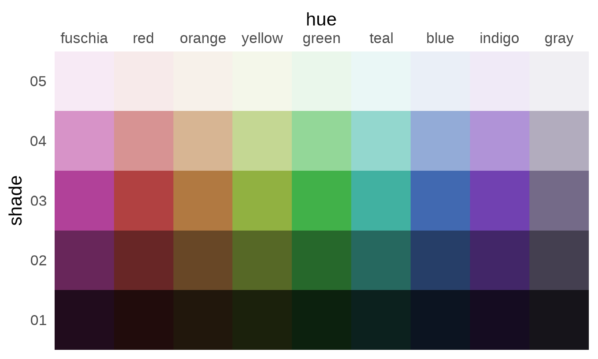
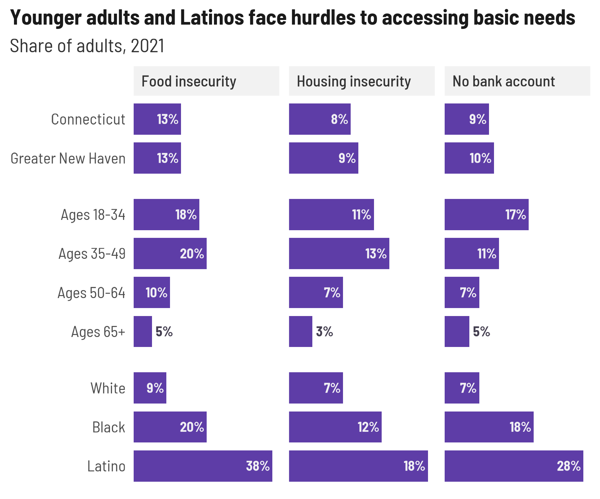
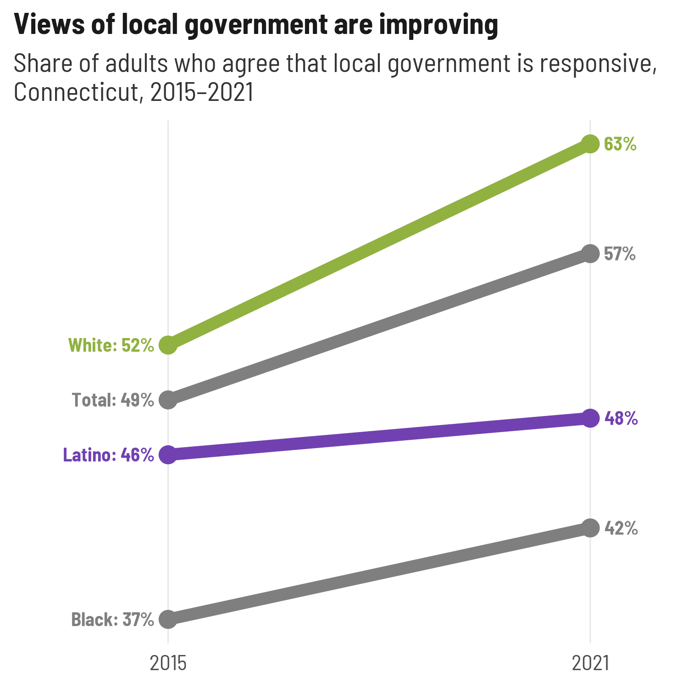
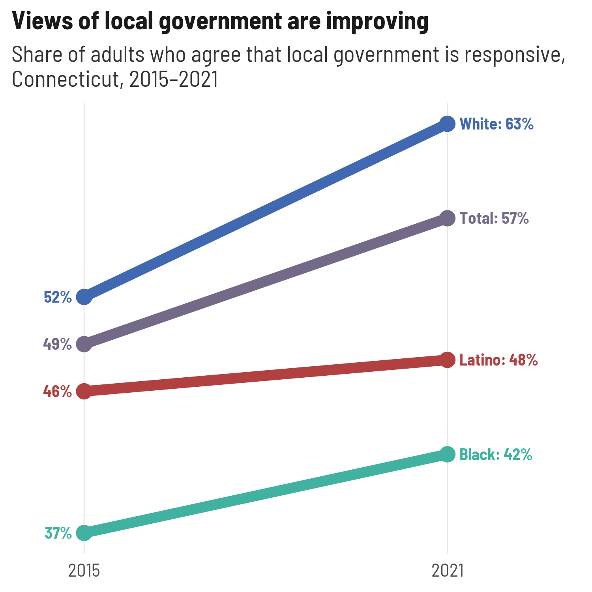
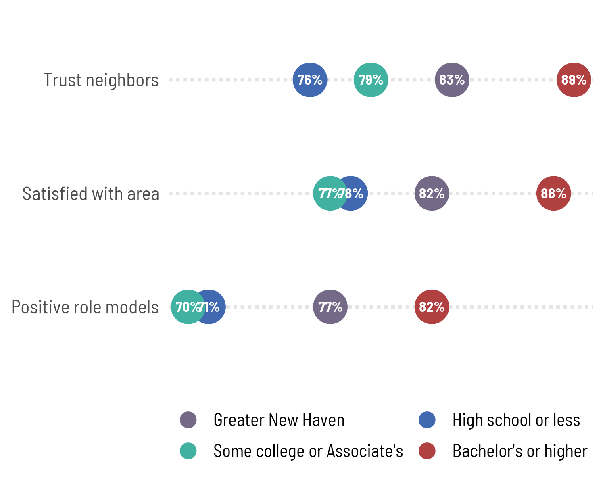
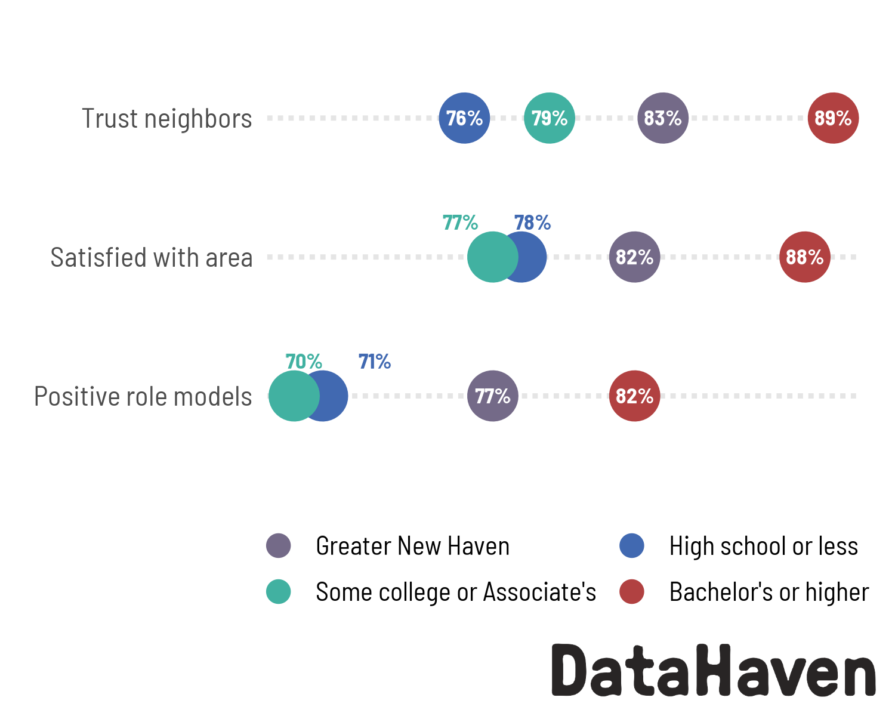

As a showcase of many of the functions in stylehaven,
this is a simplified redo of several charts from the 2021 DCWS launch
event, using data that’s bundled up with this package.
library(stylehaven)
library(ggplot2)
library(dplyr)
library(showtext)
showtext_auto()
showtext_opts(dpi = 150)Unified styling setup
Illustrates:
- Creating multiple weights of a font to use across all charts with
font_add_weights - Creating an array of color palettes based on a primary color
font_add_weights("Barlow Semi Condensed", semibold = 500)
#> ℹ Registering the following fonts:
#> • Barlow Semi Condensed with regular weight 400 and bold weight 700
#> • Barlow Semi Condensed Semibold with semibold weight 500 and black weight 900
base_col <- "#5e3da7"
palx_colors <- palx(base_col, n_shades = 5, plot = TRUE)
qual_pal <- palx_colors$shade03
# use with offset labels to make nearly-white labels inside bars, dark gray labels outside
tf_pal <- c("TRUE" = palx_colors[["shade02"]][["gray"]], "FALSE" = palx_colors[["shade05"]][["gray"]])
theme_bar <- function(x, ...) {
camiller::theme_din(base_family = "Barlow Semi Condensed", ygrid = FALSE) +
theme(plot.caption.position = "plot",
strip.text = element_text(family = "Barlow Semi Condensed Semibold", face = "plain"))
}
theme_set(theme_bar())
update_geom_defaults("col", list(fill = base_col))
update_geom_defaults("text", list(size = 3.5, fontface = "bold", family = "Barlow Semi Condensed", color = tf_pal[["FALSE"]]))
pal4 <- unname(qual_pal[c("gray", "blue", "teal", "red")])I’ll keep all the plots in one named list, and all their output
parameters (width & height, could also include something like logo
placement) in another named list. Then I’ll map over these to save all
the plots as PDF and PNG. Having a list of widths & heights also
makes it easier to have the same dimensions within this document (as
chunk fig.width and fig.height) as they have
once they’re exported. Doing this prints an error when running chunks
for some reason but you can ignore it.
Facetted bar chart
Illustrates:
- Offsetting labels across multiple scales with
offset_lbls - Lil bit of string formatting functions
- This won’t show up when rendered, but I’ve set
fig.width=plot_params$financial_insecurity$w, fig.height=plot_params$financial_insecurity$hfor this chunk
financial_to_plot <- fin_insecurity |>
filter(category %in% c("Connecticut", "Greater New Haven", "Age", "Race/Ethnicity")) |>
mutate(category = forcats::fct_collapse(category, Total = c("Connecticut", "Greater New Haven"))) |>
group_by(question) |>
offset_lbls(value = value, frac = 0.02, thresh = 0.2, fun = percent100)
financial_to_plot
#> # A tibble: 27 × 9
#> # Groups: question [3]
#> question category group value is_small off y just lbl
#> <chr> <fct> <fct> <dbl> <lgl> <dbl> <dbl> <dbl> <chr>
#> 1 food_insecurity Total Conn… 0.13 FALSE -0.0076 0.122 1 13%
#> 2 food_insecurity Total Grea… 0.13 FALSE -0.0076 0.122 1 13%
#> 3 food_insecurity Age Ages… 0.18 FALSE -0.0076 0.172 1 18%
#> 4 food_insecurity Age Ages… 0.2 FALSE -0.0076 0.192 1 20%
#> 5 food_insecurity Age Ages… 0.1 FALSE -0.0076 0.0924 1 10%
#> 6 food_insecurity Age Ages… 0.05 TRUE 0.0114 0.0614 0 5%
#> 7 food_insecurity Race/Ethn… White 0.09 FALSE -0.0076 0.0824 1 9%
#> 8 food_insecurity Race/Ethn… Black 0.2 FALSE -0.0076 0.192 1 20%
#> 9 food_insecurity Race/Ethn… Lati… 0.38 FALSE -0.0076 0.372 1 38%
#> 10 housing_insecurity Total Conn… 0.08 FALSE -0.0036 0.0764 1 8%
#> # ℹ 17 more rows
plots[["financial_insecurity"]] <- ggplot(financial_to_plot, aes(x = forcats::fct_rev(group), y = value)) +
geom_col(width = 0.8) +
geom_text(aes(label = lbl, y = y, hjust = just, color = is_small), show.legend = FALSE) +
coord_flip() +
scale_y_barcontinuous(breaks = NULL) +
scale_color_manual(values = tf_pal) +
facet_grid(rows = vars(category), cols = vars(question),
scales = "free", space = "free_y",
labeller = labeller(.cols = camiller::clean_titles)) +
theme(strip.text.x = element_text(hjust = 0),
strip.text.y = element_blank()) +
labs(x = NULL, y = NULL,
title = "Younger adults and Latinos face hurdles to accessing basic needs",
subtitle = "Share of adults, 2021")
plots[["financial_insecurity"]]
Labeling endpoints
endpoint_lbls adds columns for labels that are offset
slightly to the left for the lower limit and to the right for the upper
limit, a corresponding hjust value to align left-hand labels at the end
of the string and right-hand labels at the start of the string, and
labels to use that include the grouping variable on one or both sides.
This encourages direct labeling to wean yourself away from legends.
One thing to deal with here is the margins of the plot: You can set
padding with expansion, but that changes the limits of the
scale as well, so you might need to adjust your breaks. That’s easy
enough for slopegraphs like this but could get annoying if you don’t
know exactly what the breaks will need to be.
govt_trend <- cws_trend |>
filter(indicator == "local_govt_responsive",
year %in% range(year),
category %in% c("Total", "Race/Ethnicity"))
(govt_left <- govt_trend |>
endpoint_lbls(x = year, value = value, group = group,
fun = percent100, long_side = "left"))
#> # A tibble: 8 × 8
#> year indicator category group value x just lbl
#> <dbl> <fct> <fct> <fct> <dbl> <dbl> <dbl> <chr>
#> 1 2015 local_govt_responsive Total Total 0.49 2015. 1 Total: 49%
#> 2 2015 local_govt_responsive Race/Ethnicity White 0.52 2015. 1 White: 52%
#> 3 2015 local_govt_responsive Race/Ethnicity Black 0.37 2015. 1 Black: 37%
#> 4 2015 local_govt_responsive Race/Ethnicity Latino 0.46 2015. 1 Latino: 4…
#> 5 2021 local_govt_responsive Total Total 0.57 2021. 0 57%
#> 6 2021 local_govt_responsive Race/Ethnicity White 0.63 2021. 0 63%
#> 7 2021 local_govt_responsive Race/Ethnicity Black 0.42 2021. 0 42%
#> 8 2021 local_govt_responsive Race/Ethnicity Latino 0.48 2021. 0 48%
ggplot(govt_left, aes(x = year, y = value, color = group, group = group)) +
geom_path(linewidth = 3) +
geom_point(size = 4) +
geom_text(aes(label = lbl, x = x, hjust = just)) +
scale_x_continuous(expand = expansion(add = c(2, 1)), breaks = c(2015, 2021)) +
scale_y_continuous(breaks = NULL) +
scale_color_manual(values = pal4) +
theme(legend.position = "none",
panel.grid.major.x = element_line(color = "gray90")) +
labs(x = NULL, y = NULL,
title = "Views of local government are improving",
subtitle = "Share of adults who agree that local government is responsive,\nConnecticut, 2015–2021")
If I want to switch sides for the long label, the only thing I need to change is the padding on the x-axis—everything else is in the data frame.
govt_right <- govt_trend |>
endpoint_lbls(x = year, value = value, group = group,
fun = percent100, long_side = "right") # this is the default side
plots[["govt_trend"]] <- ggplot(govt_right, aes(x = year, y = value, color = group, group = group)) +
geom_path(linewidth = 3) +
geom_point(size = 4) +
geom_text(aes(label = lbl, x = x, hjust = just)) +
# in practice I might use ggrepel
scale_x_continuous(expand = expansion(add = c(1, 2)), breaks = c(2015, 2021)) +
scale_y_continuous(breaks = NULL) +
scale_color_manual(values = pal4) +
theme(legend.position = "none",
panel.grid.major.x = element_line(color = "gray90")) +
labs(x = NULL, y = NULL,
title = "Views of local government are improving",
subtitle = "Share of adults who agree that local government is responsive,\nConnecticut, 2015–2021")
plots[["govt_trend"]]
For just a few lines, full labels on just the left or right is fine, but there’s also the option to add labels on both sides, which can help make more lines easier to read
Separating squished labels
Dot plots with points directly labeled are great until the values are
too close together, and then it’s a pain to keep the labels from
overlapping. One nice way to handle this is to calculate the distance
between points on each line (whatever’s the independent variable) and
offset labels that are within some threshold of any other label. The
data frame this returns can be used with semi_join and
anti_join to make 2 calls to
geom_text/geom_text_repel. The argument
thresh = 0.03 means values with a difference of 0.03 will
be considered too close; this is an absolute value.
cohesion <- community_cohesion |>
filter(category %in% c("Greater New Haven", "Education"))
ggplot(cohesion, aes(x = question, y = value, color = group)) +
geom_point(size = 9) +
geom_text(aes(label = percent100(value)), size = 3, color = "white") +
coord_flip() +
scale_x_discrete(labels = camiller::clean_titles) +
scale_y_continuous(breaks = NULL) +
scale_color_manual(values = pal4,
guide = guide_legend(nrow = 2, byrow = TRUE, override.aes = list(size = 4))) +
theme(legend.position = "bottom",
panel.grid.major.y = element_line(size = 1, linetype = "11", color = "gray90")) +
labs(x = NULL, y = NULL, color = NULL)
#> Warning: The `size` argument of `element_line()` is deprecated as of ggplot2 3.4.0.
#> ℹ Please use the `linewidth` argument instead.
#> This warning is displayed once every 8 hours.
#> Call `lifecycle::last_lifecycle_warnings()` to see where this warning was
#> generated.
(to_dodge <- cohesion |>
dodge_lbls(x = question, value = value, group = group, thresh = 0.02))
#> # A tibble: 4 × 2
#> question group
#> <chr> <fct>
#> 1 positive_role_models High school or less
#> 2 positive_role_models Some college or Associate's
#> 3 satisfied_with_area High school or less
#> 4 satisfied_with_area Some college or Associate's
plots[["cohesion"]] <- ggplot(cohesion, aes(x = question, y = value, color = group)) +
geom_point(size = 9) +
geom_text(aes(label = percent100(value)),
data = ~anti_join(., to_dodge, by = c("question", "group")),
size = 3, color = "white") +
ggrepel::geom_text_repel(aes(label = percent100(value)),
data = ~semi_join(., to_dodge, by = c("question", "group")),
size = 3, fontface = "bold", family = "Barlow Semi Condensed",
direction = "x", nudge_x = 0.2, min.segment.length = 2, seed = 1,
segment.color = tf_pal[["TRUE"]], box.padding = 0.5, show.legend = FALSE) +
coord_flip() +
scale_x_discrete(labels = camiller::clean_titles) +
scale_y_continuous(breaks = NULL) +
scale_color_manual(values = pal4,
guide = guide_legend(nrow = 2, byrow = TRUE, override.aes = list(size = 4))) +
theme(legend.position = "bottom",
panel.grid.major.y = element_line(size = 1, linetype = "11", color = "gray90")) +
labs(x = NULL, y = NULL, color = NULL)
plots[["cohesion"]]
Batch writing image files
After exporting about 5,000 plots for the equity reports, I’m excited to codify a way to go from the above lists of plots and plot parameters and not have to think about how to write all those plots out, adding & scaling logos. I didn’t have a good way to test out lots of different graphics devices on different platforms, so file a Github issue if any exports don’t work.
By default, this will add a logo (using
stylehaven::add_logo) and adjust the height of the plot to
fit so that the aspect ratio stays the same even after appending the
logo to the bottom of the image.
Writing out one plot (by default, both PNG & PDF):
out_dir <- file.path(tempdir(), "plots")
if (!dir.exists(out_dir)) dir.create(out_dir)
write_plot(plots$govt_trend, filename = "government_trend",
dir = out_dir, width = 5, height = 5, dpi = 150, verbose = FALSE)
list.files(out_dir, recursive = TRUE)
#> [1] "pdf/government_trend.pdf" "png/government_trend.png"Even better, iterating over the plots and plot params to write all the plots. One thing to note here is to be careful that you’re matching plots and params if they’re in separate lists: you might get messed up if these lists are out of order, even if they’re named. (This once bothered me enough to post a question on Stack Overflow.) You can map over one list and use its names to pull entries out of the other list.
purrr::iwalk(plots, function(pl, id) {
ps <- plot_params[[id]]
write_plot(pl, filename = id, dir = out_dir,
width = ps$w, height = ps$h, dpi = 150, verbose = FALSE)
})
list.files(out_dir, recursive = TRUE)
#> [1] "pdf/cohesion.pdf" "pdf/financial_insecurity.pdf"
#> [3] "pdf/government_trend.pdf" "pdf/govt_trend.pdf"
#> [5] "png/cohesion.png" "png/financial_insecurity.png"
#> [7] "png/government_trend.png" "png/govt_trend.png"